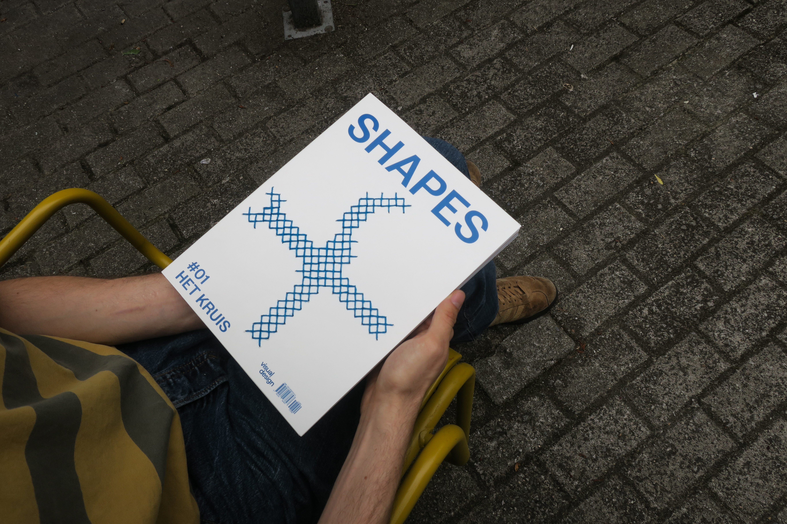
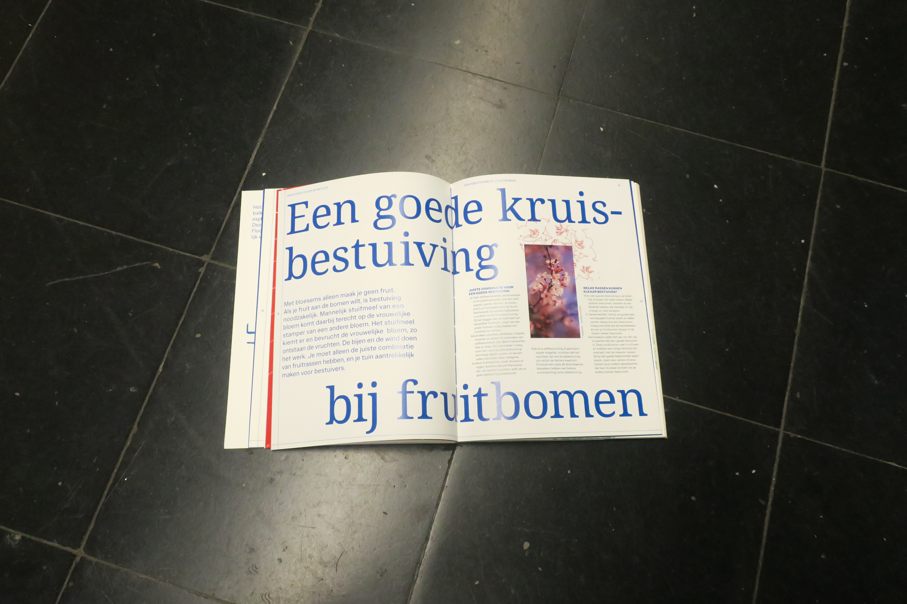
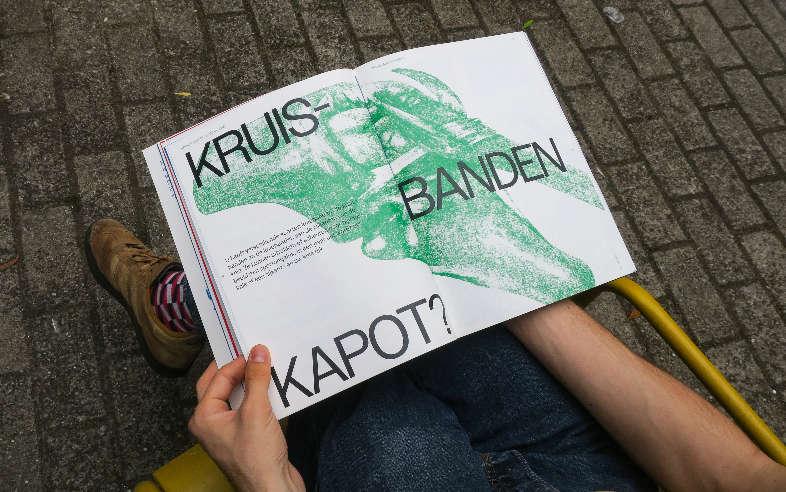
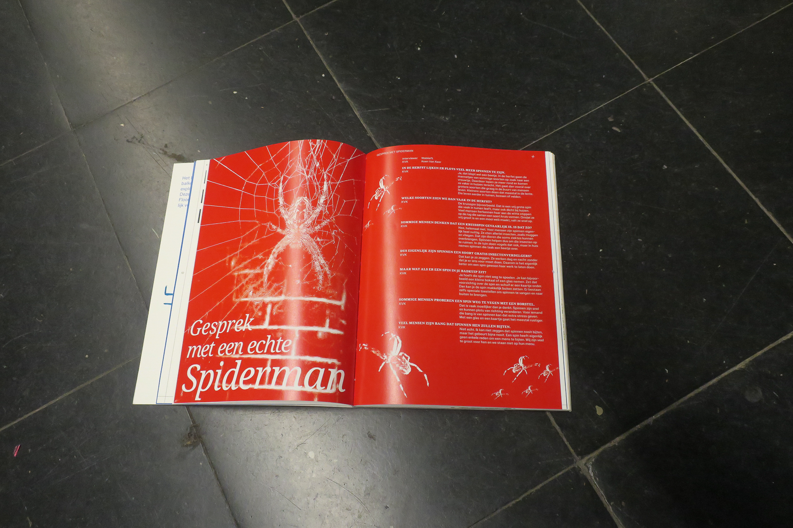
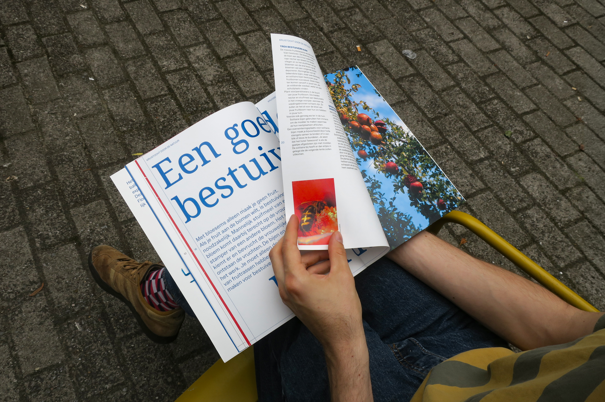
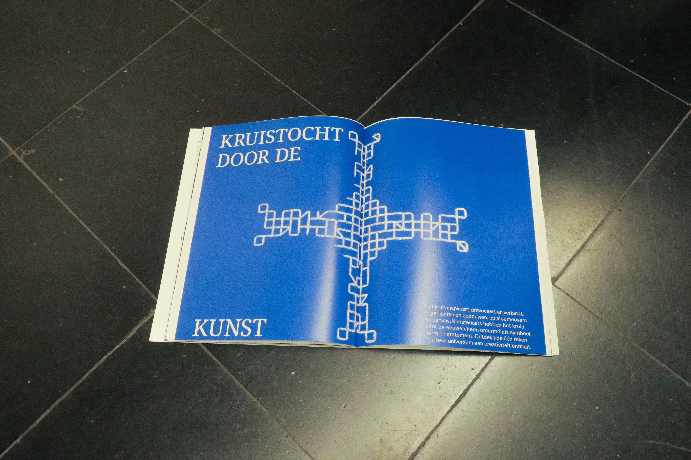
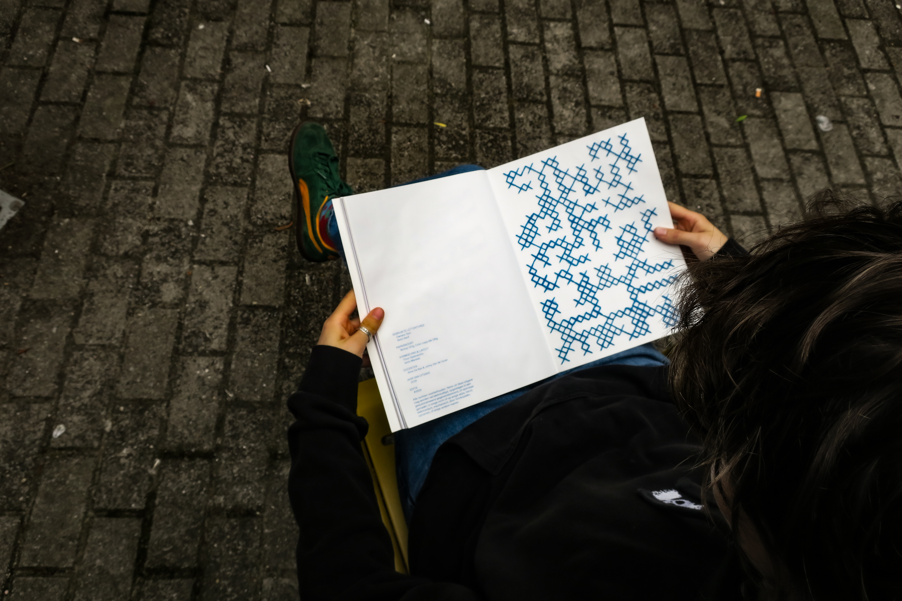

We ontwierpen een magazine volledig rond 1 vorm: het kruis. De inhoud, de vormgeving en al de rest ging rond deze vorm.
Zo hebben we op de cover de kruissteek toegepast, deze is omgedraaid op de achterzijde om beide te tonen. De hoofdstukpagina's zijn ook deze omgekeerde semi-organische steek, met telkens kruistocht door… als naam. Elk hoofdstuk heeft een andere passende kruisvorm gekregen. Op veel foto's hebben we een kruis beeldbewerking toegepast. De paginanummers vormen een kruis met de rug. We plaatsten bij elk artikel een kruis van rechte al dan niet doorlopende lijnen. Soms zijn deze kleine kruisjes andere keren gaan ze over heel de pagina. Zo zijn er nog veel details die deze stijl vormen.
We gebruikten een beperkt aantal kleuren heel vaak door dit magazine. De typografie varieert telkens tussen 2 fonts: Noto Serif en Owners. Dit allemaal gebaseerd op de inhoud van het artikel. Ook gebruikte we vaak nog andere beeldbewerkingen zoals afbeeldingen monotoon/duotoon zetten, een outline bewerking. We plaatsten de titels vaak groot om toffe en interessante composities te creëren en de lezen te begeleiden doorheen het artikel.






